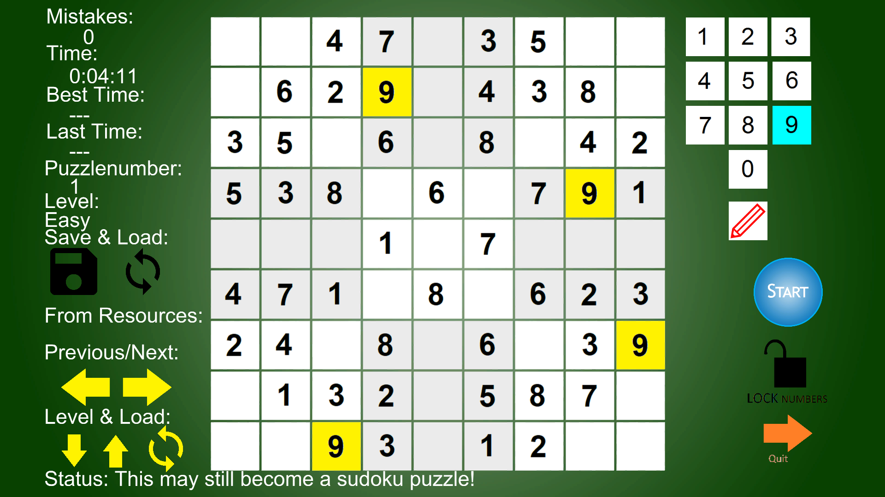

After inputting the numbers of your choice finish the Puzzle you have by confirming your inputs with touching or pressing the [Lock numbers] symbol with your forefinger or mouse.
Basically the Game tolerates or allows for 2 mistakes a Person to make. Once you make a 3rd Number incorrect input; it is Game Over. In combination with the Pencil symbol or icon you can make 'little notes' or let's say input the 'little Numbers' as reminders into the booths. In combination with the black disk symbol you can Save a puzzle before Quitting, with the black 'refresh' symbol you can reload a previously Saved Puzzle from an earlier Run. Reloading, after 'Quitting and saving' are working 'out-of-the-box', there is no such a thing necessary as/ NO 'Run(ning) as Administrator' or something. Only use the black disk symbol for saving in combination with Quitting an unfinished puzzle, switching to built in puzzles or restarting the system. But don't forget to, it makes life easier. NB: there is NO autosave functionality in the Program when aborting or Quitting it.
- With 80 Puzzles built in (4 levels: easy, medium, hard & very hard) to load from resources !
Do you want the default built in Puzzles ?
First, for example, you select the puzzle number with the arrows in the horizontal aligned direction (keep an eye on 'Status ..' while selecting).
Second, with the arrows in the vertical aligned direction, you can Change the level of the Puzzle selected (keep an eye on 'Status ..' while selecting).
Then in combination with the 'yellow' refresh symbol you can load the resulting selected puzzle (see Status: ..) from resources; you can load only One Puzzle you choose at a time.
Tips or Remarks: - In some cases you might want to adjust your screen resolution according to what best suits you to a mode that fits with everything in the focus of the screen, for instance on a tablet.
- For a more pleasurable seamless experience on a tablet: make sure you work with a full battery, unless you are plugged into a wall socket with your device so your tablet stays charged all the time.
- solving a Puzzle together with someone (for instance: your Spouse, Partner, Friend or Aquaintance) can perhaps be pleasurable also.
A video:
One can Puzzle on some Smart tv's, with a mouse attached or plugged in a USB port, as well as on desktop, laptop or tablet computers. Even on some smartphones.
To deselect a green selected arrow: click on a randomly chosen green spot in the screen area !
One can Puzzle on desktop, laptop or Microsoft Surface tablet computers.
To deselect a green selected arrow: click on a randomly chosen green spot in the screen area !
Thanks go to :
soundbible.com with their sounds:
Pling, which is in the public domain,- recorded by Kevan GC
Text Message alert, which has a Attribution 3.0 license, by Daniel Simon
Short triumphal fanfare (Attribution 3.0 license) by John Strack
'Sad Trombone' by Joe Lamb (Attribution 3.0)
'Tick' recorded by DeepFrozenApps (Attribution 3.0)
and 'Blop' by Mark DiAngelo (Attribution 3.0)
Icons made by Google from www.flaticon.com
load/refresh icon:Icons made by Google from www.flaticon.com
The generated sudoku puzzles:They are from Open Sudoku maintained by Óscar García Amor